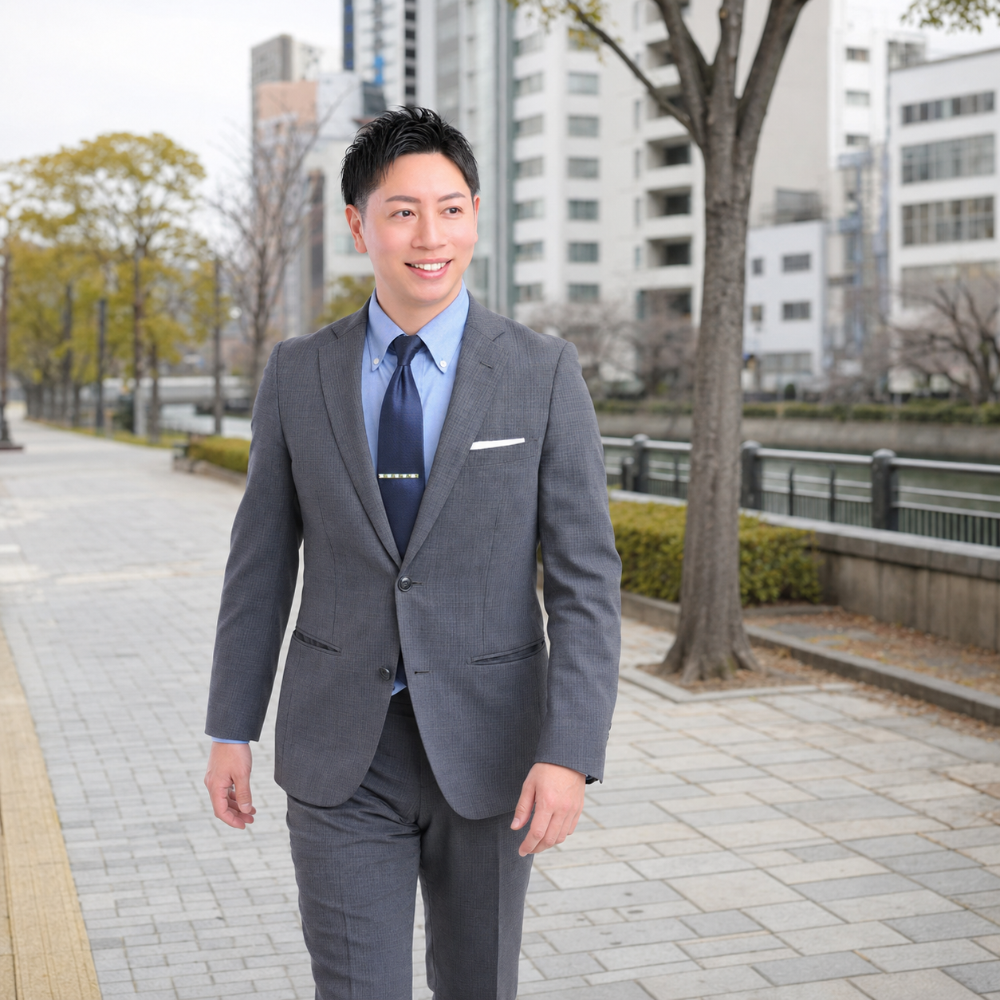

平原こうやは1991年生まれ。大阪市港区を拠点に、地域の声を聞きながら政治活動を続けています。人とのご縁を大切に、暮らしの中の困りごとや不安を分かりやすく届けることを心がけています。
プロフィールを見る暮らしに身近なテーマから、港区の未来を考えます。
子どもを育てる家庭と学ぶ子どもたちが孤立しないまちを目指します。身近な相談先と学びの環境づくりを大切にします。
災害、防犯、交通安全に備え、毎日の安心を支える地域のつながりを育てます。
商店街や地域活動、若い世代の挑戦を応援し、港区のにぎわいを広げます。
地域での活動やnoteでの発信を、随時お知らせしています。
後援会、ボランティア、個人献金、公式LINE。あなたに合った方法で、活動を支えていただけます。
活動を継続して支えていただく会です。入会のご案内を掲載します。
街頭活動やSNSでの応援など、無理のない形で参加できます。
銀行振込などによるご支援の方法をご案内します。
最新情報の受け取りやお問い合わせの窓口です。